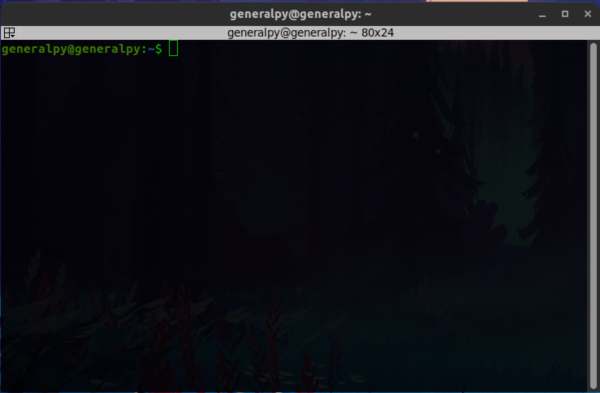

Linux now has developed GUI like other OSes. But true power of Linux comes from the terminal.
Terminal , also known as Terminal Emulator is a GUI program that helps us to enter commands on Linux. Gnome terminal is one of the most used terminals as it comes preinstalled in Ubuntu, Centos, Mint etc. Other Terminals are terminator, Tilda, xTerm etc.
ctrl + alt + t ubuntu terminal open shortcut.
Terminator :-

Gnome-Shell :-
Shell is where commands are really executed. Terminal is just a GUI, shell is where real stuff happens. Shell is also known as command interpreter, it takes command interprets it and then sends this to kernel to execute the commands.
GFG definition for shell :- SHELL is a program which provides the interface between the user and an operating system. When the user logs in OS starts a shell for user. Kernel controls all essential computer operations, and provides the restriction to hardware access, coordinates all executing utilities, and manages Resources between process. Using kernel only user can access utilities provided by operating system.
There are different shells like C shell(denoted by csh) , Bourne shell(denoted by sh), bash(GNU Bourne Again Shell)[most used shell]
Console is just like terminal but it works in a text based environment unlike terminal which operates in GUI environment. Older Unix systems and linux systems were console only systems. Virtual consoles can be opened in Ubuntu using keys ctrl + alt + f1 - f8. In earlier days console was also a physical device to enter commands(game consoles exist but we are talking here in context of linux).Console sometimes means the keyboard and monitor physically attached to this computer.